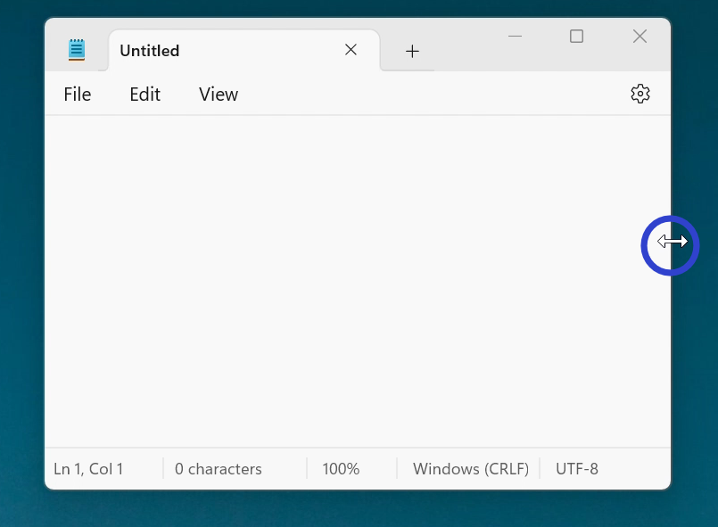
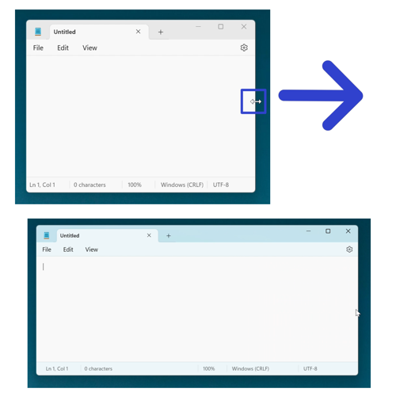
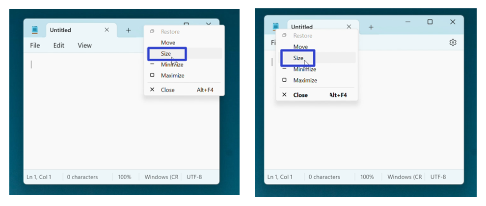
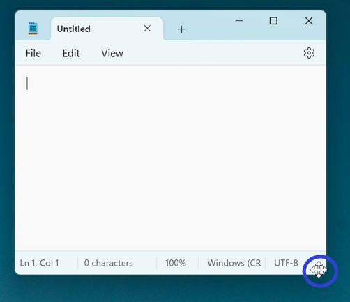
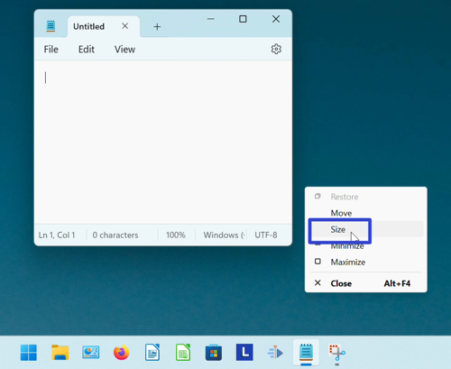

How to Resize the Microsoft Notepad App (Windows 11)
This tutorial covers:
How to Resize Notepad:
No time to scroll down? Click through this tutorial presentation:
Watch a tutorial video:
How to Resize Notepad With Mouse
- Step 1: First open Notepad. Hover the mouse over any edge or corner of the window, until the cursor becomes a double sided arrow. 
- Step 2: Click, hold, and drag the mouse to resize the window. Release the mouse to stop resizing the window. 
How to Resize Notepad With Right Click
- Step 1: Open Notepad. Right click either the top or the upper left corner of the window.

- Step 2: In the menu that opens, click “Size”. 
- Step 3: Hover the four arrows cursor over any edge or corner of the window. 
- Step 4: Click, hold, and drag the mouse to resize the window. Release the mouse to stop resizing the window.

How to Resize Notepad With Menu
- Step 1: First open Notepad. Go down to the taskbar and hover the mouse over the Notepad app icon.

- Step 2: Right click the small window that appears.

- Step 3: In the menu that opens, click “Size”. 
- Step 4: Hover the four arrows cursor over any edge or corner of the window.
- Step 5: Click, hold, and drag the mouse to resize the window. Release the mouse to stop resizing the window.
Refer to these instructions later with this free PDF tutorial.